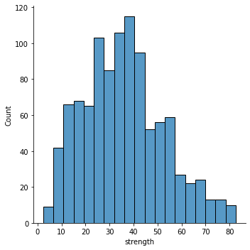
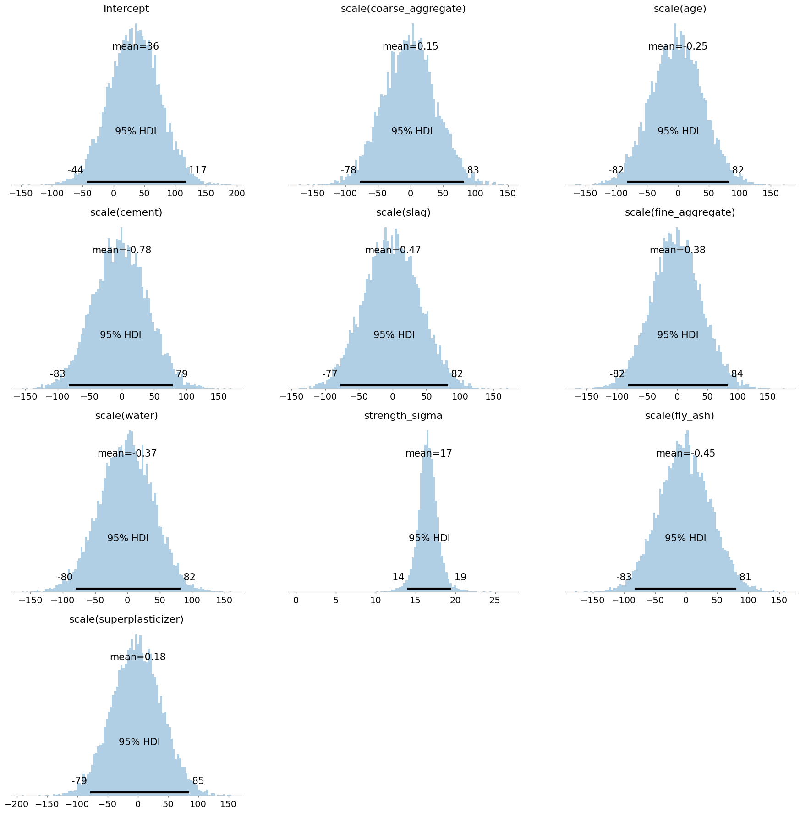
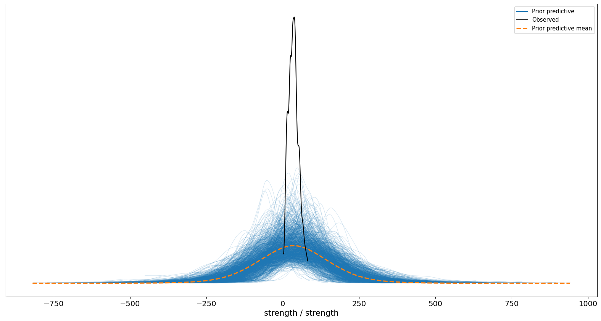
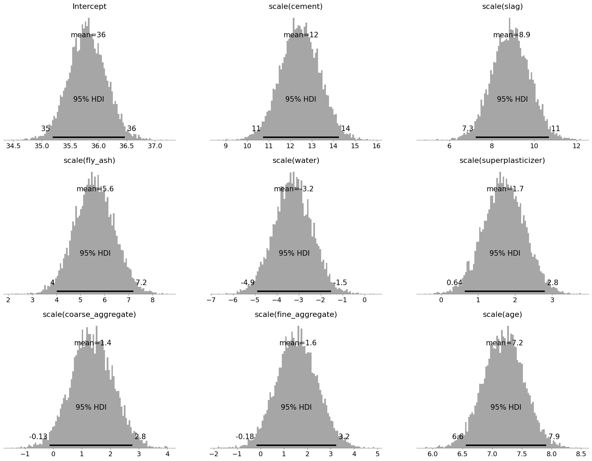
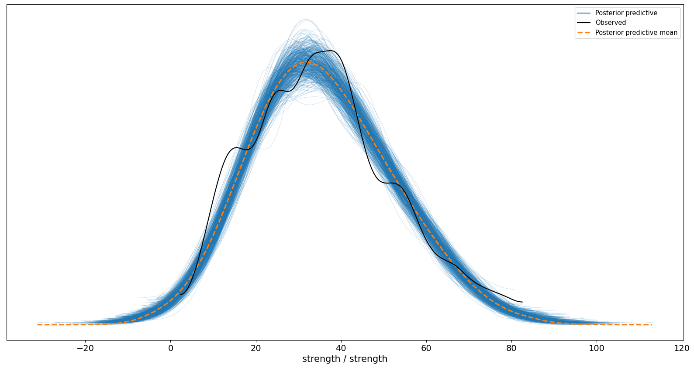
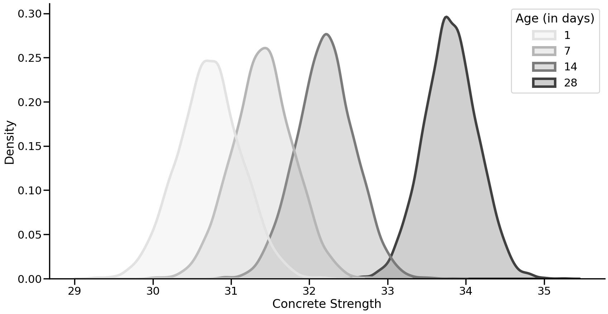
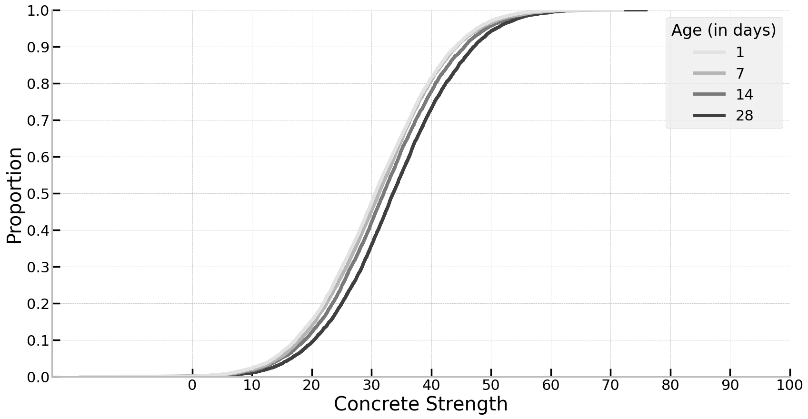

import re # Regular expressions
import arviz as az # Bayesian plotting
import bambi as bmb # Bayesian model building
import numpy as np # numeric python
import pandas as pd # dataframes
import seaborn as sns # plots
import scipy.stats as st # statistical functions
import matplotlib.pyplot as plt # Plotting
# Set seed for reproducibility
np.random.seed(34)Predicting Concrete Strength - and winning competitions with Bayes
Bayesian
PyMC
bambi
competition
I recently took part in a data-science competition that involved building a linear model to estimate the strength of concrete. Perhaps not the most thrilling of topics, but it was a good place to apply some Bayesian inference. The bambi package makes fitting Bayesian linear models in Python very simple, and I’ve been using it as part of my workflow on the majority of projects. I’m pleased to say I won, and I’m posting the solution below as a reminder. In the final steps I had to translate standardised coefficients back to the original scale, which was tricky.
Can you predict the strength of concrete?
📖 Background
You work in the civil engineering department of a major university. You are part of a project testing the strength of concrete samples.
Concrete is the most widely used building material in the world. It is a mix of cement and water with gravel and sand. It can also include other materials like fly ash, blast furnace slag, and additives.
The compressive strength of concrete is a function of components and age, so your team is testing different combinations of ingredients at different time intervals.
The project leader asked you to find a simple way to estimate strength so that students can predict how a particular sample is expected to perform.
💾 The data
The team has already tested more than a thousand samples (source):
Compressive strength data:
- “cement” - Portland cement in kg/m3
- “slag” - Blast furnace slag in kg/m3
- “fly_ash” - Fly ash in kg/m3
- “water” - Water in liters/m3
- “superplasticizer” - Superplasticizer additive in kg/m3
- “coarse_aggregate” - Coarse aggregate (gravel) in kg/m3
- “fine_aggregate” - Fine aggregate (sand) in kg/m3
- “age” - Age of the sample in days
- “strength” - Concrete compressive strength in megapascals (MPa)
Acknowledgments: I-Cheng Yeh, “Modeling of strength of high-performance concrete using artificial neural networks,” Cement and Concrete Research, Vol. 28, No. 12, pp. 1797-1808 (1998).
💪 Challenge
Provide your project leader with a formula that estimates the compressive strength. Include:
- The average strength of the concrete samples at 1, 7, 14, and 28 days of age.
- The coefficients \[ \beta_{0}, \beta_{1} ... \beta_{8} \], to use in the following formula:
\[ Concrete \ Strength = \beta_{0} \ + \ \beta_{1}*cement \ + \ \beta_{2}*slag \ + \ \beta_{3}*fly \ ash \ + \ \beta_{4}*water \ + \] \[ \beta_{5}*superplasticizer \ + \ \beta_{6}*coarse \ aggregate \ + \ \beta_{7}*fine \ aggregate \ + \ \beta_{8}*age \]
Starting Note
The bambi package is needed here to help build a Bayesian regression model that will give an informative, probabilistic estimate of compressive strength. !pip install bambi was used to acquire it, PyMC, and other Bayesian workflow packages for model building and exploration.
Step 0 - Imports
Step 1 - Exploratory Data Analysis
First we check for missing values, examine the datatypes of the dataframe, and examine the distribution of the target variable - strength.
# Read in the data
df = pd.read_csv('concrete_data.csv')
# Any missing values?
display(df.isna().any())
# What are the data types?
display(df.dtypes)
# Plot the strength variable
sns.displot(df['strength'])cement False
slag False
fly_ash False
water False
superplasticizer False
coarse_aggregate False
fine_aggregate False
age False
strength False
dtype: bool
cement float64
slag float64
fly_ash float64
water float64
superplasticizer float64
coarse_aggregate float64
fine_aggregate float64
age int64
strength float64
dtype: object
<seaborn.axisgrid.FacetGrid at 0x13c345c30>
There are no missing values, which is really helpful. Moreover, the data is all numeric, and the strength variable looks approximately normally distributed. We can more or less proceed straight to building our Bayesian model!
Step 2 - Building a Bayesian model
The brief clearly lays out the foundations of a linear model for the relationship between strength and the other given variables. There are many approaches to linear models (and many other kinds of modelling strategies that could be used here), but the aim seems to be to estimate the β coefficients in the model and use those to predict the strengths of different ages of concrete.
Bayesian inference is a natural method here because it allows us to estimate these coefficients with uncertainty, and best of all - we get uncertainty in our estimates for free, which would be absolutely vital in civil engineering (in fact check out episode number 59 of the Learning Bayesian Statistics podcast!)
Bayesian inference does require a prior for each of the coefficients. There isn’t any clear indication of these effects in the brief, so we will use very wide, general priors. First though, let us set up the model using bambi.
# Models are built in bambi using a formula string, much like statsmodels or R
# We lay out this model according to the brief!
modelspec = 'strength ~ cement + slag + fly_ash + water + superplasticizer + coarse_aggregate + fine_aggregate + age'However, unlike frequentist estimators, Bayesian inference is very picky about the scale of the data. The above model would cause the MCMC sampler to struggle given the hugely different scales of the variables. The solution is to scale the predictors. A z-score standardisation works particularly well here. In fact, bambi is clever enough to allow this in the model specification - we simply wrap each term in a scale function. We do this below, and build a model instance
# Set a scaled model
modelspec = """strength
~ scale(cement) + scale(slag)
+ scale(fly_ash) + scale(water)
+ scale(superplasticizer) + scale(coarse_aggregate)
+ scale(fine_aggregate) + scale(age)
"""
# Set up a model - the priors are by default very weak, so there is no need to specify them explicitly here, though we will examine them
model = bmb.Model(modelspec, df)
model.build() # creates the model graph using theanoStep 3 - Examining the prior beliefs
With the model built (but not yet fitted), it is time to check the priors. First, let us examine a plot of the prior distribution of each of the coefficients - a good way to think of this is what the model thinks the coefficients could be before it sees the data.
# Show the priors
model.plot_priors(draws=10_000, hdi_prob=.95, kind='hist', bins=100);
This is great. It shows us that the most likely effects for the main predictors are hovering around zero, but that the effect could be as big or small as about ±80 strength units. Sometimes people accuse priors of ‘influencing’ the data; but this is clearly not happening much here as those effects are very broad. Next, we check a ‘prior predictive’ distribution, which will give us an idea of what the model thinks the strength variable itself looks like, based on - The observed data for our predictors, and - Our prior distributions for the coefficients
In simple terms - we can ask the model to make some predictions before its seen the data, just to get a sense of what it thinks.
# Build prior predictive
prpc = model.prior_predictive(draws=10_000)
# And pass this to the plot_ppc function in Arviz
az.plot_ppc(prpc, group='prior', num_pp_samples=1000, backend_kwargs={'figsize': (20, 10)})<AxesSubplot:xlabel='strength / strength'>
OK, its pretty clear at this point our model gets the shape of the distribution correct, but its guesses are extremely spread out - it thinks concrete strength of -250 to 250 is plausible. Obviously that is not true, and we can sharpen things up by letting the model observe the strength data.
Step 4 - Fitting the model
Inspired by sklearn, we can fit a Bayesian model in bambi using MCMC with the .fit() method. We do this below and sample from the posterior distribution (which we can then use to predict on new data).
# Fit the model using the NUTS sampler in PyMC
posterior = model.fit(draws=2000, tune=1000)
# Once fitted, let us examine the posterior distributions of the coefficients
az.plot_posterior(posterior, kind='hist',
color='black',
bins=100,
var_names='~sigma',
filter_vars='like',
hdi_prob=.95);Auto-assigning NUTS sampler...
Initializing NUTS using jitter+adapt_diag...
Multiprocess sampling (4 chains in 4 jobs)
NUTS: [Intercept, scale(cement), scale(slag), scale(fly_ash), scale(water), scale(superplasticizer), scale(coarse_aggregate), scale(fine_aggregate), scale(age), strength_sigma]100.00% [12000/12000 00:25<00:00 Sampling 4 chains, 0 divergences]
Sampling 4 chains for 1_000 tune and 2_000 draw iterations (4_000 + 8_000 draws total) took 58 seconds.
This contains all the information about the coefficients we may need, but we need to bear in mind scaling the predictor variables now means that - for exmaple - a 1 standard deviation increase in the cement variable is associated with a 13 point increase in strength; and we’re 95% certain the effect is between 11 and 14 units. This is an issue for age in particular as we need to predict specific ages, and now we have age on the scale of the standard deviation. First, let us examine the predictions of the model, and see if it maps closely to the data. We do that using a posterior predictive check:
# Conduct a posterior predictive check
model.predict(posterior, kind='pps')
# And plot
az.plot_ppc(posterior, num_pp_samples=500, backend_kwargs={'figsize': (20, 10)})<AxesSubplot:xlabel='strength / strength'>
After seeing the data, the models predictions look pretty good - we can rest knowing our model makes sensible predictions.
Step 5 - Delivering the answers
Now we turn to answering the question. The project leader wants: - The average strength of the concrete samples at 1, 7, 14, and 28 days of age. - The coefficients \[ \beta_{0}, \beta_{1}, ... \beta_{8} \]
We almost have the second part, but the first part involves making some specific predictions - we want the model to tell us specifically what it thinks the strength value will be at 1, 7, 14, and 28 days. This will invovle building a new dataset for the model to predict on. What we then want is to send to the model a dataset with four new observations for age (set at the desired levels). For all other predictors, we will hold them constant at their mean levels. bambi will transform this data and give us our predictions!
# First, compute the means of the other predictors (not age, or strength), and repeat them four times
new_data = (df
.drop(columns=['age', 'strength'])
.mean()
.to_frame()
.T
)
# Repeat it, then assign the age data
new_data = (pd.concat([new_data] * 4, ignore_index=True)
.assign(age = [1, 7, 14, 28])
)
# Examine
new_data.head()| cement | slag | fly_ash | water | superplasticizer | coarse_aggregate | fine_aggregate | age | |
|---|---|---|---|---|---|---|---|---|
| 0 | 281.165631 | 73.895485 | 54.187136 | 181.566359 | 6.203112 | 972.918592 | 773.578883 | 1 |
| 1 | 281.165631 | 73.895485 | 54.187136 | 181.566359 | 6.203112 | 972.918592 | 773.578883 | 7 |
| 2 | 281.165631 | 73.895485 | 54.187136 | 181.566359 | 6.203112 | 972.918592 | 773.578883 | 14 |
| 3 | 281.165631 | 73.895485 | 54.187136 | 181.566359 | 6.203112 | 972.918592 | 773.578883 | 28 |
This can now be handed to the model.
# Get predictions of the mean of those datapoints
mean_predictions = model.predict(posterior, kind='mean', data=new_data, inplace=False)
# Extract them to a dataframe, and join with the 'age' column of new_data, and do some tidying up
means = (mean_predictions['posterior']['strength_mean']
.stack(draws=('chain', 'draw'))
.to_dataframe()
.reset_index()
.merge(new_data[['age']], left_on='strength_obs', right_index=True)
.pivot(index=['chain', 'draw'], columns='age', values='strength_mean')
)
means.head()| age | 1 | 7 | 14 | 28 | |
|---|---|---|---|---|---|
| chain | draw | ||||
| 0 | 0 | 30.414769 | 31.088415 | 31.874336 | 33.446179 |
| 1 | 30.112034 | 30.830555 | 31.668829 | 33.345377 | |
| 2 | 30.747711 | 31.412350 | 32.187762 | 33.738587 | |
| 3 | 30.955742 | 31.603543 | 32.359310 | 33.870844 | |
| 4 | 30.530722 | 31.261242 | 32.113516 | 33.818064 |
Our posterior predictions for the mean concrete strength for different ages are in hand. Let us analyse and plot these: - Averages and highest density intervals - Density plots for visualisation purposes
# Create the summary per age
def summarise_bayesian(col, coverage=.95):
# Mean
mu = col.mean()
# Density
lwr, upr = az.hdi(col.values, hdi_prob=coverage)
return pd.Series([mu, lwr, upr], index=['Mean Strength', 'Lower Strength Credible Limit 95%', 'Upper Strength Credible Limit 95%'])
# Show the means and credible intervals
display(
(means
.apply(summarise_bayesian)
.round(2)
.rename_axis(index='Age (in days)')
.T
))
# Illustrate via a plot
with sns.plotting_context('poster'):
fig, ax = plt.subplots(1, 1, figsize=(20, 10))
sns.despine(fig)
sns.kdeplot(data=means, ax=ax, fill=True, palette='Greys', linewidth=5)
ax.set(xlabel='Concrete Strength')
ax.get_legend().set_title('Age (in days)')| Age (in days) | Mean Strength | Lower Strength Credible Limit 95% | Upper Strength Credible Limit 95% |
|---|---|---|---|
| age | |||
| 1 | 30.72 | 29.90 | 31.52 |
| 7 | 31.41 | 30.63 | 32.17 |
| 14 | 32.21 | 31.48 | 32.94 |
| 28 | 33.80 | 33.11 | 34.45 |

From the above it is clear that, holding all other predictors constant, the average strength of concrete increases over time. Using Bayesian methods meant our predictions of this average comes with uncertainty - for 28 days for example, the average is 33.80, but we are 95% certain it is between 33.12 and 34.45. We can also easily make probabilistic claims, such as what is the probability a 28 day old concrete sample is stronger than a 14 day old?
# Whats the probability 28 day old is stronger on average than 14? According to the model - certain!
display(means[28].ge(means[14]).mean())1.0The only thing left to do is to provide the project leader with the coefficient terms for our regression. Given we are using Bayesian methods, we can provide three - one for the lower 95% credibliliy, one for the mean, and another for the upper 95% credibility, just so our project leader can quantify uncertainty! To save them the trouble of transforming variables, all we need to is transform the posterior coefficient estimates to the original scale and compute a summary.
Back transformation is a little tricky but not impossible, following the formula:
\[ \hat \beta_0 - \sum_{j=1}^k \hat \beta_j \frac{\bar x_j}{S_j} \] for the intercept, and
\[ \frac{\hat \beta_j}{S_j} \] for the coefficients, where \[ {S_j} \] represents the standard deviation of the predictor.
# As it is simpler, let us convert the coefficients back first
# First get the coefficient distributions
posterior_draws = (posterior['posterior']
.drop_vars(['strength_sigma', 'strength_mean', 'Intercept'])
.to_dataframe()
.rename(columns=lambda x: re.sub(r'scale|[\\(\\)]', '', x)) # little regex to remove the 'scale(var_name)' formatting
.apply(lambda x, df_=df: x / df_[x.name].std()) # for each column, grab the corresponding column from df, compute SD, and divide posterior distribution by it
)
# # Then target the intercept which is a little trickier
# First scale the coefficients differently, and sum
sum_scaled_coefs = (posterior['posterior']
.drop_vars(['strength_sigma', 'strength_mean', 'Intercept'])
.to_dataframe()
.rename(columns=lambda x: re.sub(r'scale|[\\(\\)]', '', x)) # little regex to remove the 'scale(var_name)' formatting
.apply(lambda x, df_=df: x * (df_[x.name].mean() / df_[x.name].std())) # now grab corresponding column compute mean/sd and multiply by estimate
.sum(axis='columns')
.reset_index(drop=True)
.squeeze()
)
# Compute the rest of the equation
Intercept = (posterior['posterior']['Intercept']
.to_dataframe()
.reset_index(drop=True)
.squeeze()
.sub(sum_scaled_coefs)
.to_frame()
.set_index(posterior_draws.index)
)
# and add it to posterior_draws
posterior_draws.insert(0, 'Intercept', Intercept)
posterior_draws.head()| Intercept | cement | slag | fly_ash | water | superplasticizer | coarse_aggregate | fine_aggregate | age | ||
|---|---|---|---|---|---|---|---|---|---|---|
| chain | draw | |||||||||
| 0 | 0 | -23.620205 | 0.115327 | 0.107009 | 0.086837 | -0.142423 | 0.260784 | 0.019041 | 0.018877 | 0.112220 |
| 1 | -15.596581 | 0.118582 | 0.106121 | 0.086538 | -0.157617 | 0.304718 | 0.012568 | 0.018382 | 0.119695 | |
| 2 | -26.222202 | 0.114074 | 0.098117 | 0.079643 | -0.125431 | 0.376820 | 0.018306 | 0.020487 | 0.110719 | |
| 3 | -21.705891 | 0.115148 | 0.089371 | 0.083510 | -0.144183 | 0.453397 | 0.023125 | 0.012821 | 0.107914 | |
| 4 | -35.762022 | 0.132922 | 0.113358 | 0.102077 | -0.175410 | 0.137964 | 0.021733 | 0.031982 | 0.121694 |
With some pandas wrangling, we now have the posterior distributions on the original scale. This is one of the downsides of Bayesian modelling - sometimes you need the coefficients on the scale of the input variables, but MCMC sampling struggles with varying scales, so most estimation is done on a standardised scale. But we have it; and now we can give the three regression equations for the mean and upper/lower uncertainty:
# State the regression equation for the project lead, as well as upper/lower credible bounds
display(posterior_draws.apply(summarise_bayesian).round(3))| Intercept | cement | slag | fly_ash | water | superplasticizer | coarse_aggregate | fine_aggregate | age | |
|---|---|---|---|---|---|---|---|---|---|
| Mean Strength | -22.412 | 0.120 | 0.104 | 0.088 | -0.151 | 0.289 | 0.018 | 0.020 | 0.114 |
| Lower Strength Credible Limit 95% | -75.285 | 0.103 | 0.084 | 0.063 | -0.230 | 0.108 | -0.002 | -0.002 | 0.104 |
| Upper Strength Credible Limit 95% | 29.179 | 0.136 | 0.124 | 0.113 | -0.071 | 0.470 | 0.036 | 0.040 | 0.125 |
Conclusion
Using Bayesian inference, we have estimated a model that solves the problem the project leader asked for. For each of the predictor variables, we obtained a coefficient (actually a distribution of credible coefficients) that represents how the variable changes with concrete strength. One of the amazing things about Bayesian estimation is that we have free uncertainty in our estimates. As such, we are able to provide not just a point estimate (the mean-strength formula above) but also the lower and upper 95% credible values for each variable, which essentially represents actually-possible regression equations. The students would be wise to incorporate this uncertainty.
We also used the model to provide estimates for concrete strength at different levels of age, in days; 1, 7, 14, and 28 days. Again, because of the power of Bayesian estimation, we were able to provide credible limits for these predictions and were able to make statements about the superiority of concrete strength - for example, our model was 100% certain that, all other variables being equal, 28 day old concrete is stronger than 14 day old concrete.
Step [-1] - BONUS ANALYSIS
What is stated above is a fairly standard example of Bayesian linear regression. In linear regression, we aim to predict the mean of the distribution of observed data as a linear combination of factors. Formally, it is set out as:
\[ y_i = \alpha + x_i\beta + \epsilon \]
However, from a probabilistic perspective, a linear model can be written like this:
\[ y_i \sim \mathcal{N}(\mu_i, \sigma) \]
where
\[ \mu_i = \alpha + x_i\beta \]
That is, our observed data is expected to be normally distributed with the mean parameter generated by the linear combination of predictors, and a standard deviation parameter.
What is not obvious from looking at this formula is that it implies that there is a distribution per-observation governed by the model, and not a distribution around the mean parameter, which is what is focused on in the above analysis. In fact, using Bayesian estimation, it is possible to obtained a distribution of a given data point, known as the posterior predictive distribution, which is the distribution of future data points, given observed data points, integrating out the parameters in the model.
While this sounds complex, in reality what it gives us is simple: a probability distribution for a single datapoint for what it may look like in future, after taking the model into account. This is really important for the application at hand, given that concrete strength is critical for a lot of work! Specifically we can look past the mean of the distributions - that is, what is the average concrete strength for a given 14 day old sample - but instead estimate likely values we may see in future. Let’s examine this below and see what the distributions look like for the different ages using an empirical cumulative distribution plot. As will be seen, density plots will be too messy here.
# Sample the posterior predictive distribution
ppd = model.predict(posterior, kind='pps', data=new_data, inplace=False)
# Examine it
ppd = (ppd['posterior_predictive']
.to_dataframe()
.unstack('strength_dim_0')
.rename(columns=new_data.age)
.droplevel(0, axis='columns')
)
with sns.plotting_context('poster'):
plt.style.use('bmh')
fig, ax = plt.subplots(1, 1, figsize=(20, 10))
sns.despine(fig)
sns.ecdfplot(data=ppd, ax=ax, palette='Greys', linewidth=5)
ax.set(xlabel='Concrete Strength', facecolor='white')
ax.get_legend().set_title('Age (in days)')
ax.set_xticks(labs := np.arange(0, 110, 10), labels=labs)
ax.set_yticks(labs := np.arange(0, 1.1, 0.1), labels=[round(x,1) for x in labs])
This gives a surprising result. While we can see that 28 day old concrete, for the most part, is stronger than the others. But the variability here is much greater than when just estimating the mean. In fact, there are similar overlaps in strength across all ages. For example, about 70% of 28 day year old concrete will be weaker than 40, but around 77% of 14 day old will be weaker, a difference of just 7% points. Above all, this highlights that future variability is much greater than intuition suggests.